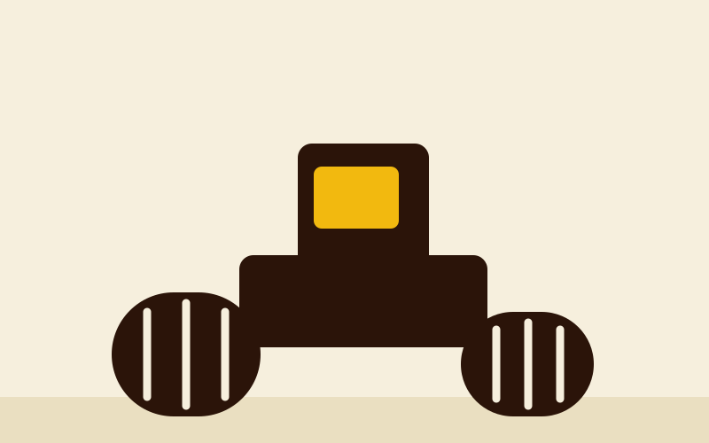
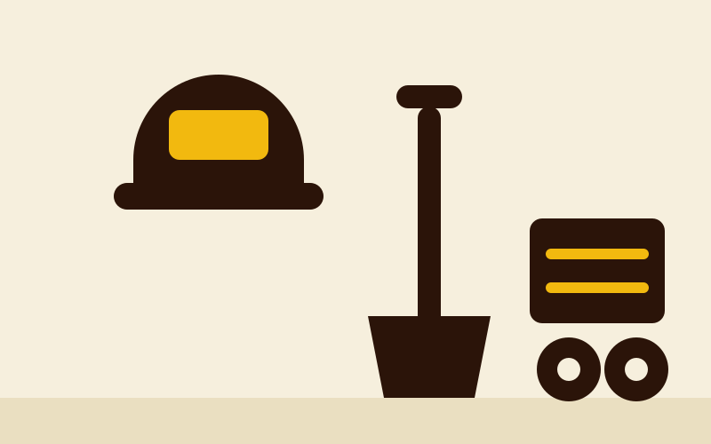

Mini bager
Prolazi kroz uske prilaze i radi uz postojeće objekte bez štete na okolišu. Koristimo ga za rovove za instalacije, iskope u dvorištima, drenažu i manje temelje.
Strojevi kojima radimo i poslovi koje svakim od njih možemo odraditi, na području Daruvara i šire.
Prolazi kroz uske prilaze i radi uz postojeće objekte bez štete na okolišu. Koristimo ga za rovove za instalacije, iskope u dvorištima, drenažu i manje temelje.

Iskop i utovar na jednom stroju. Za veće iskope, utovar materijala, razastiranje nasipa i široke zahvate gdje mini bager nije dovoljan.

Dovoz šljunka, pijeska i betonskih elemenata te odvoz zemlje i šute. Kran diže teret na mjesto ugradnje bez dodatne dizalice.

Zbijanje nasipa i podloge prije betoniranja ili asfaltiranja. Potreban je za prilaze, platoe i sve podloge koje moraju ostati ravne i nositi teret.

Oplata, vibro nabijači, alat za armaturu i sitna mehanizacija. Pokriva sve što treba oko glavnih strojeva da se posao završi od početka do kraja.
Opišite posao telefonom, mi ćemo reći što je najbolje i koliko traje.
Nazovi 099 672 0044